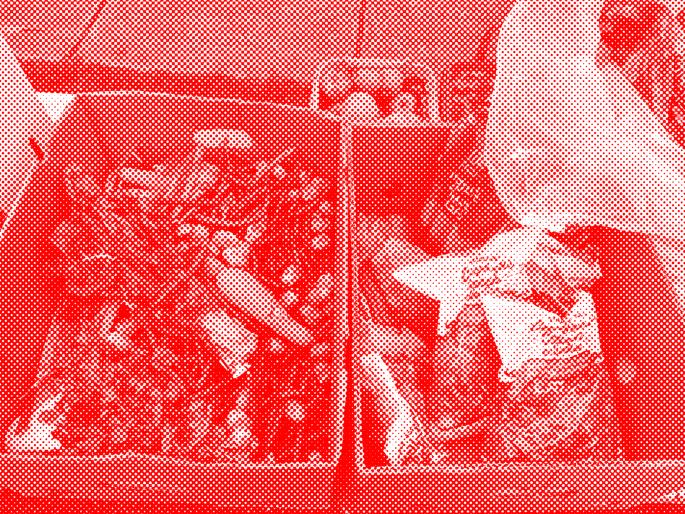

About the "Mutual Aid" Archive

Introduction
Following Somali and Black student organizations’ calls, thousands filled the streets of downtown Providence to shut it down and protest ICE terror, the murders of Renee Good and Alex Pretti, and Congress’s funding of ICE. Amongst the calls for “ICE Out” and a general strike, chants adapted from other protests in Providence followed: “Donald Trump, let’s be clear. ICE is not welcome here” and “Show me what democracy looks like, this is what democracy looks like.” These pleas to fascism and insistence on defending democracy dangerously assume that bourgeois democracy benefits humanity and is the “antidote to fascism, rather than its enabling twin” (Shifting Focus: Organizing for Revolution, Not Crisis Avoidance (Part 1), Brian Drolet, Doug Norberg, and Kali Akuno).
Drolet, Norberg, and Akuno categorize fascism along with mercantilism, social democracy, and neo-liberalism as “variants of governance in the capitalist-world system.” Capitalism describes relationships between people, specifically their relationship to the means of production. Capitalism emerged out of feudal monarchies, expanded under settler-colonial systems of chattel slavery, and matured by propelling the violent expansion of several competing empires to bring the entire planet under its domination. Political structures flow from and enforce these economic relationships. Capital governance and political relations continually adapt according to “the conditions of deprivation and unequal exchange that it depends upon.” Thus, the myth of democratic capitalism perpetuates the position of democracy as “an almost inevitable by-product of capitalism, and that in order to transform the capitalist system we have to rely upon the limited tools of bourgeois democracy to get us there.”
“Rather than narrowly focusing on elections, cross-class alliances, the movement of the far right, etc., we need to be looking at the big picture in order to develop a comprehensive line of march that will defeat ALL of the reactionary forces and usher in a new civilization. The capitalist forces of chaos and domination are at the door, and it’s truly now a question of genuine socialism or extinction. Without question, we, the “left” or revolutionary forces of the world, need to continue being the “champions of democracy”. However, this does not mean that we have to uphold or uplift bourgeois democracy, nor any of its instruments, institutions, or rituals. We can and have to do better than that. We have to create new, horizontally oriented practices and institutions of direct and deliberate democracy to break out of the stranglehold of capitalist relations. This will require revolutionary leadership to build the kind of movement that can achieve that future. We have to make a way!”
Solidarity Economy and Mutual Aid
Solidarity Economy is the economic theory that “solidarity should be introduced into the economy itself, it should become active in the various phases of the economic cycle, in production, circulation, consumption and accumulation. This implies producing with solidarity, distributing with solidarity, consuming with solidarity, accumulating and developing with solidarity” (Solidarity Economy Roads, Luis Razeto Migliaro, Translated by Matt Noyes).
The two dimensions of a solidarity economy include: a process of progressive and expanding “solidarization” in the global economy, and a process of gradual development and construction of a specific solidarity economy sector.
Mutual aid is a practice within the solidarity economy collectively coordinate and "meet each other's needs, usually from an awareness that the systems we have in place are not going to meet them"(Dean Spade, Mutual Aid: Building Solidarity During This Crisis (And The Next), 2020).
Spade outlines the key three elements of mutual aid:
1. Mutual aid projects work to meet survival needs and build and build shared understanding about why people do not have what they need.
2. Mutual aid projects mobilize people, expand solidarity, and build movements.
3. Mutual aid projects are participatory, solving problems through collective action rather than waiting for saviors.
There is also a clear distinction between charity and mutual aid. “Contemporary charity comes with eligibility requirements such as sobriety, piety, curfews, participation in job training or parenting courses, cooperation with the police, a lawful immigration status, or identifying the paternity of children. In charity programs, social workers, health care providers, teachers, clergy, lawyers, and government workers determine which poor people deserve help.”
“Charity is increasingly privatized and contracted out to the massive nonprofit sector, which benefits rich people more than poor people in two big ways. First, elite donors get to run the show. They decide what gets funded and what doesn’t… Second, the nonprofit system creates a tax shelter for rich people.”
“Mutual aid projects, in many ways, are defined in opposition to the charity model and rs current iteration in the nonprofit sector. Mutual aid projects mobilize lots of people rather than a few experts; resist the use of eligibility criteria that cut out more stigmatized people; are an integrated part of our lives rather than a pet cause; and cultivate a shared analysis of the root causes of the problem and connect people to social movements that can address these causes.”
Archive Methodology
This project archives mutual aid relationships, entry points into movement organizing, preparation and reaction to crises, systemic failures, and the limits of mutual aid. The "Mutual Aid" Archive reflects responses from the public participation/submission form. Participants' contact information is not shared.
Resources
Shifting Focus: Organizing for Revolution, Not Crisis Avoidance (Part 1), Brian Drolet, Doug Norberg, and Kali Akuno
Solidarity Economy Roads By Luis Razeto Migliaro, Matt Noyes, originally published by Grassroots Economic Organising
Mutual Aid: Building Solidarity During This Crisis (and the Next) by Dean Spade
Contact
For all inquiries, please reach out to the "Mutual Aid" Archive organizer at joouyang7@gmail.com.
Jo Ouyang is the organizer of this project. They have been working in community and student organizing spaces for the past 5 years, specifically with Asian/American, Pro-Palestine, Abolitionist, Queer/Trans, and Art organizations on Muscogee land (Atlanta), Narragansett Indian land (Providence), and Lenapehoking land (Philadelphia).